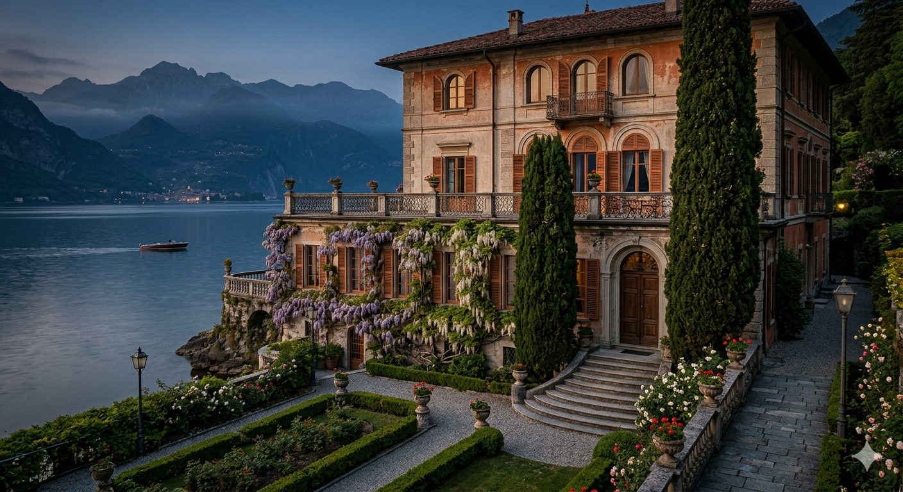
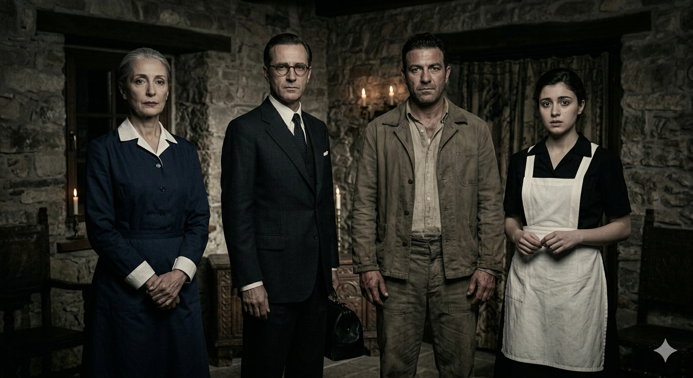
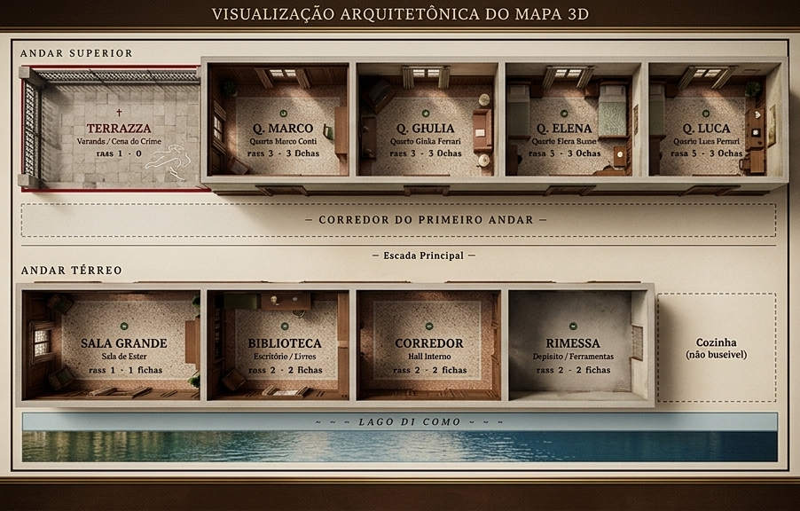

◆ ◆ ◆
◆ ◆ ◆

◆ LAGO DI COMO · GIUGNO 1953 ◆
Uma Investigação de Assassinato — Carabinieri di Como
Cada jogador escolhe um suspeito para interpretar:
FASE ATUAL: Fase 1


Declarem o aposento e a categoria a examinar. O Commissario confirmará se uma evidência foi encontrada ou se o espaço está limpo.